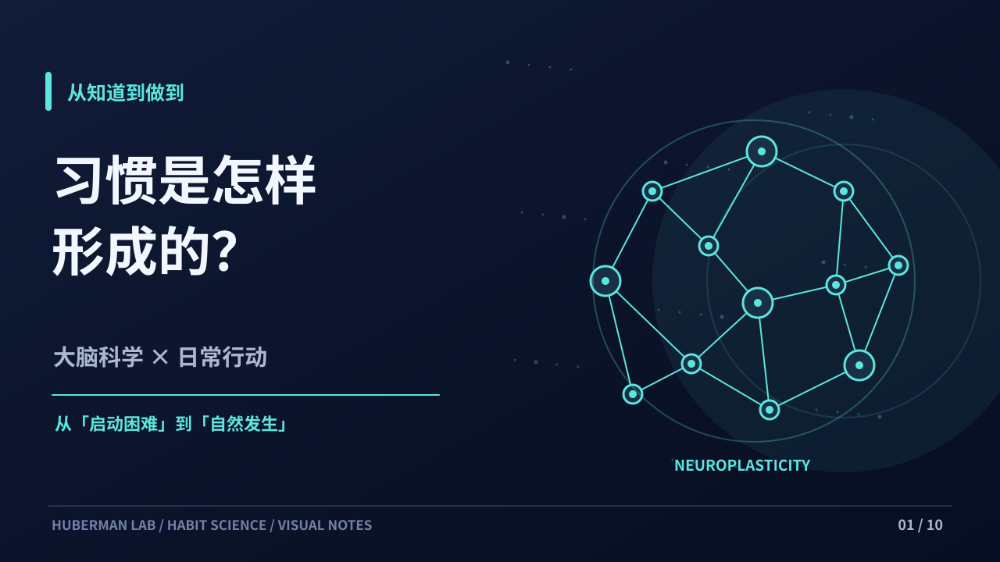
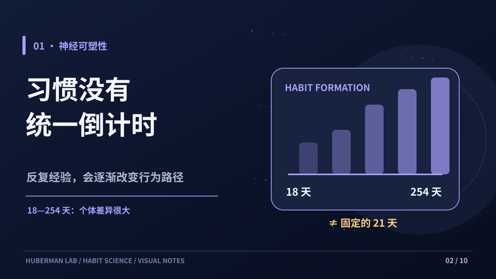

习惯是怎样形成的？
Andrew Huberman《The Science of Making & Breaking Habits》· 原创视觉科普分镜


01 / 10
键盘 ← / → 切换，空格播放或暂停。图片为 SVG 矢量图，可单独下载。21 天方案仅为节目提出的练习框架，不是普遍有效的固定成习惯时长。完整配乐 MP4 在本次 ChatGPT 对话提供下载。
Andrew Huberman《The Science of Making & Breaking Habits》· 原创视觉科普分镜


键盘 ← / → 切换，空格播放或暂停。图片为 SVG 矢量图，可单独下载。21 天方案仅为节目提出的练习框架，不是普遍有效的固定成习惯时长。完整配乐 MP4 在本次 ChatGPT 对话提供下载。